原文连接:https://www.cnblogs.com/wangwenchao/p/11748905.html
前言
本方法基于web2py框架，使用web2py的完整网站数据包创建简单网站。
web2py 是一个为Python语言提供的全功能Web应用框架，旨在敏捷快速的开发Web应用，具有快速、安全以及可移植的数据库驱动的应用，兼容 Google App Engine。
（百度百科：https://baike.baidu.com/item/web2py/8111052?fr=aladdin）
教程
1.进入网址：http://www.web2py.com/init/default/download 根据自己系统类型下载所需的数据。
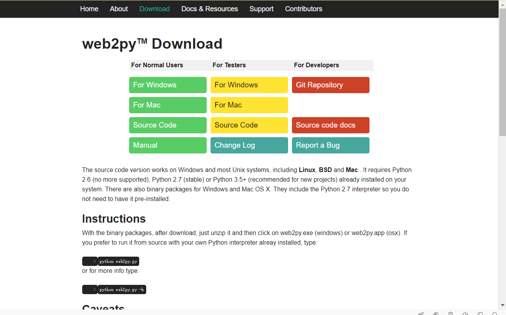
2.文件下载完毕，打开pycharm，点击'New Project'创建新的项目。
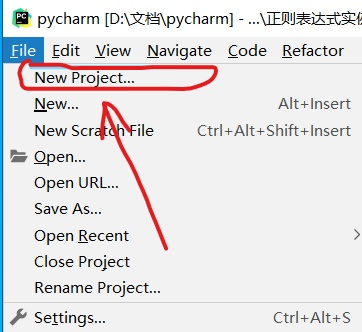
3.找到下载好的数据包文件地址，选择下载的好的数据文件。
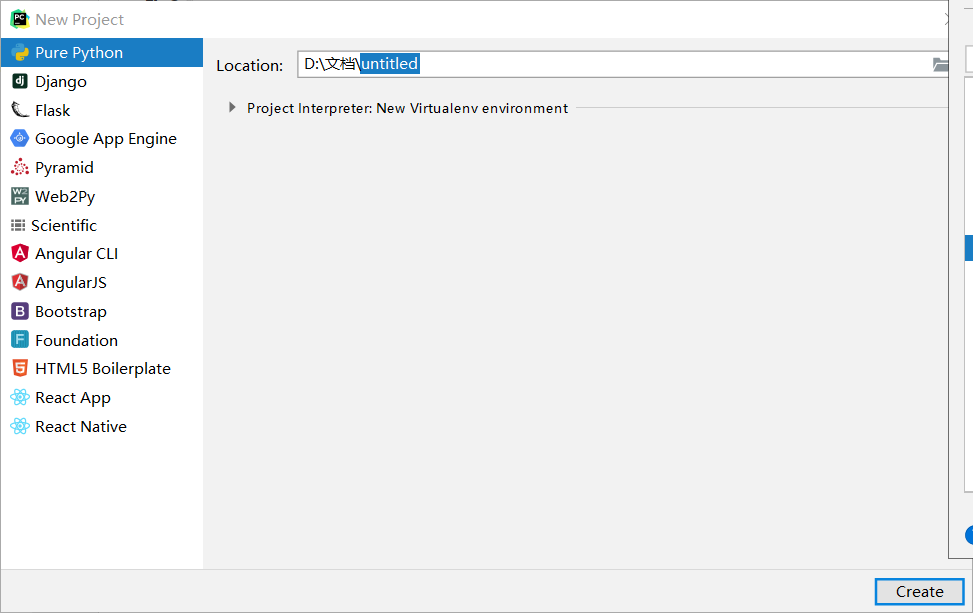
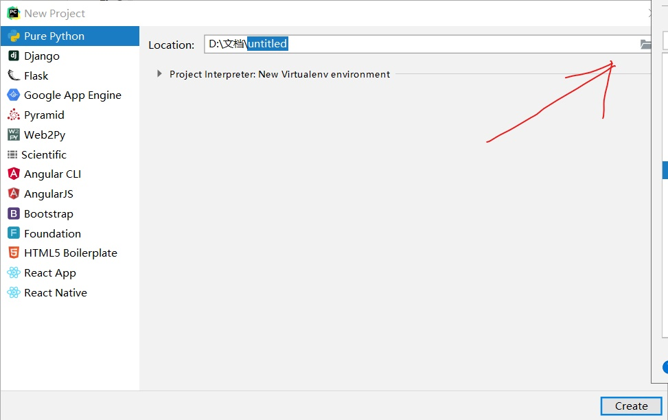
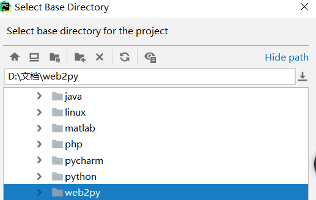
4.点击'Create',新项目创建完毕。
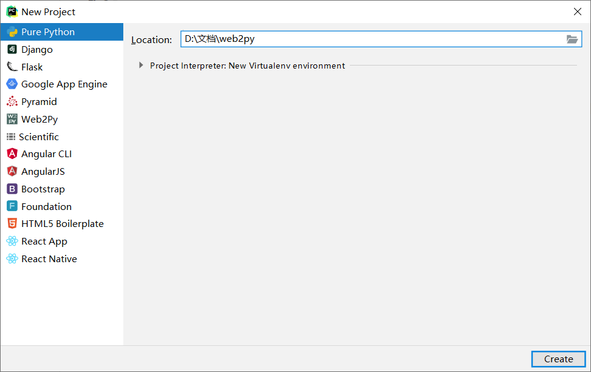
此处黄色部位显示了未选择Python解释器。
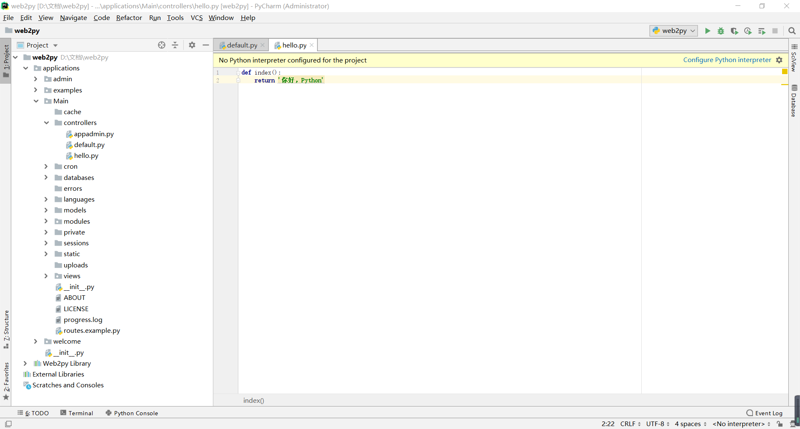
5.如果pycharm提示此‘项目没有python解释器’，那就选择一个python解释器。
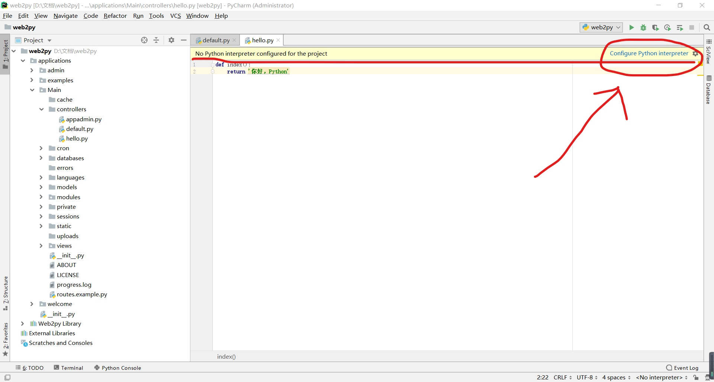
此处选择的是Python3.7，也可以通过‘show all’选择电脑安装的其他版本的Python解释器。
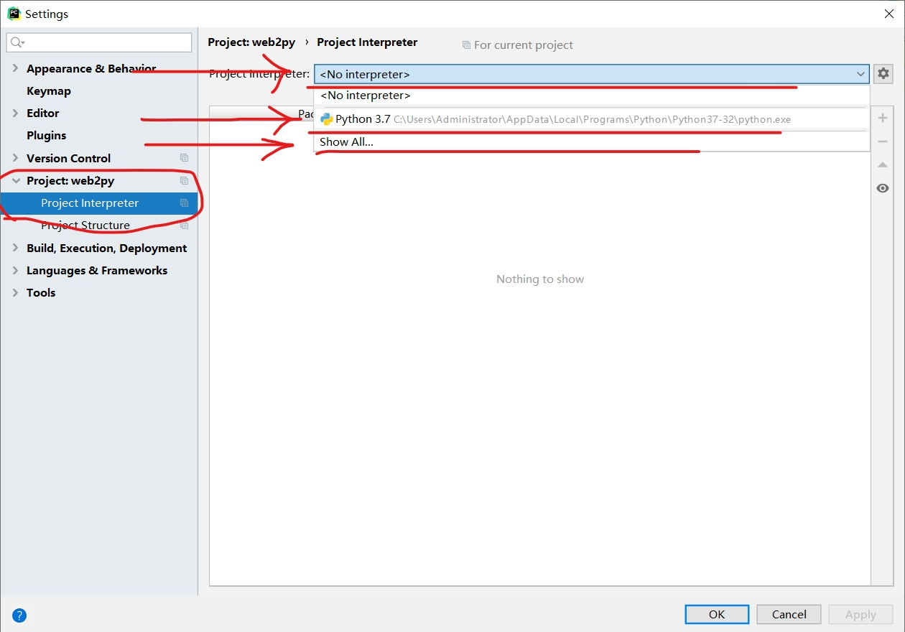
6. 运行（Shift+Ctrl+F10)。
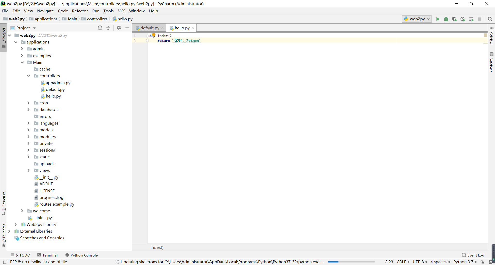
7.在‘Choose Password’设定管理员密码。
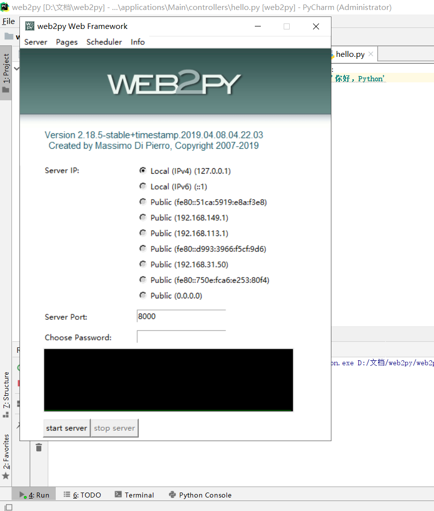
创建好网站虽然简单，但具备网站应有的所有功能（例如网站账号的登录和注册）。

8.通过‘admin’输入管理员密码，对网站进行设置。
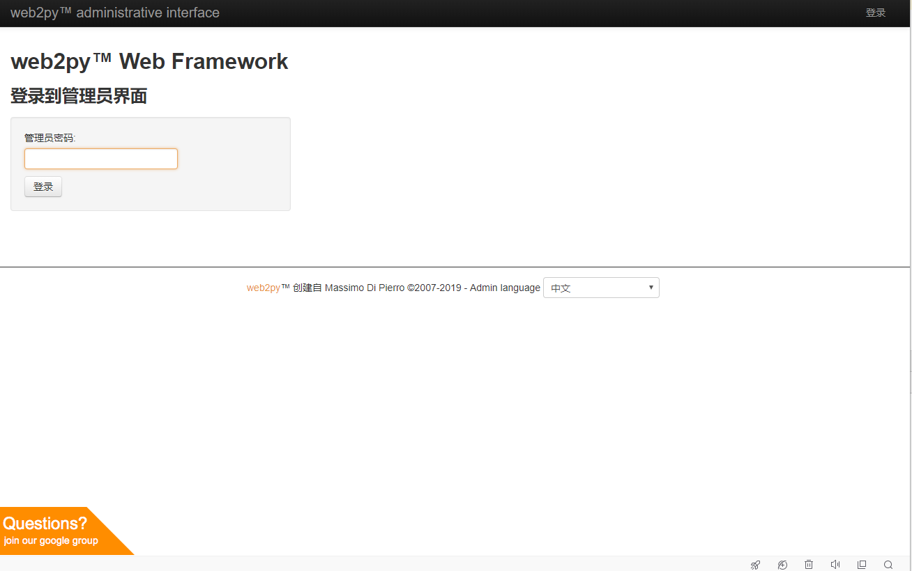
进入管理页面后，可以对网站数据进行修改，例如‘已安装的应用’或管理员密码进行修改。
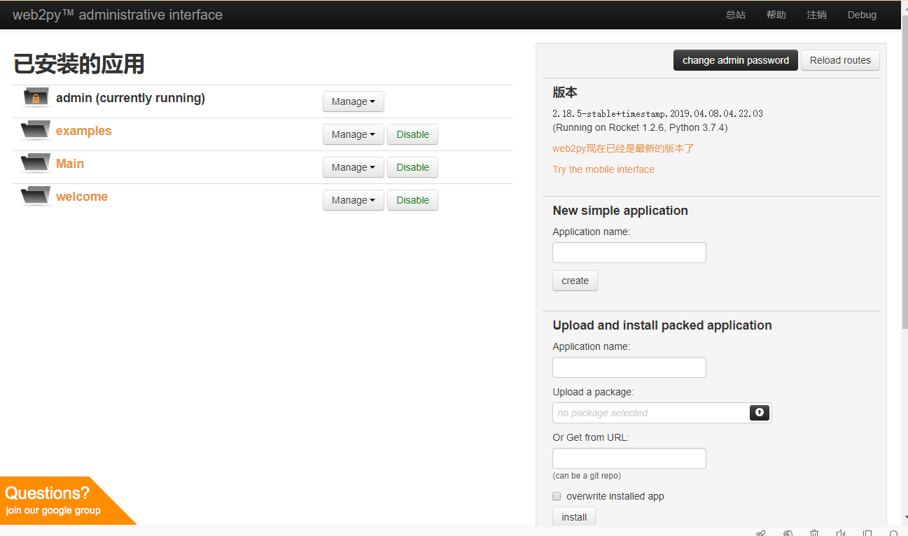
10.在‘LOGIN’处登录或注册网站账号。
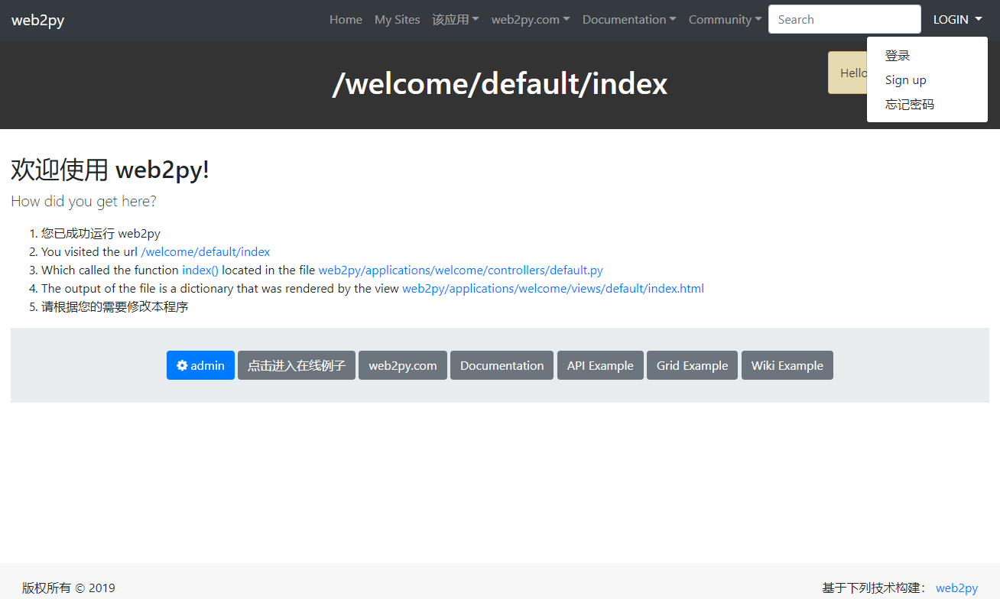
11.可以通过直接修改的本地文件方式对网站内容进行修改，例如修改CSS文件夹的内容，改变网站的ui界面。
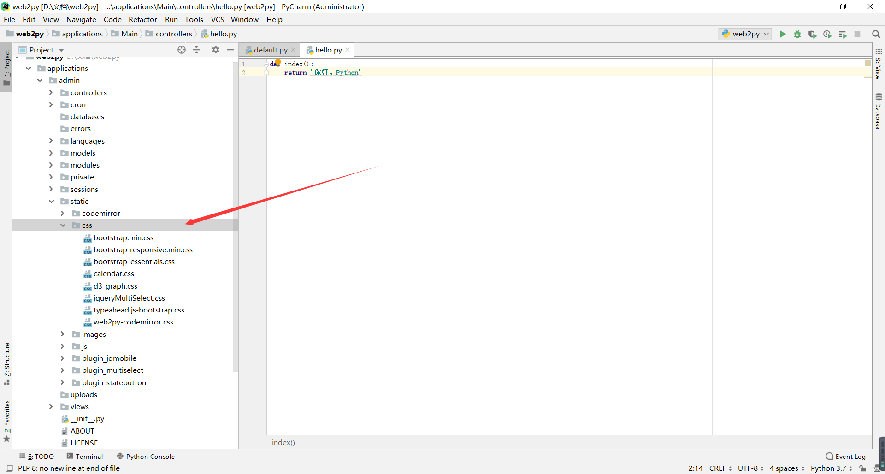
12.也可以通过在浏览器中输入文件地址来访问文件资源，例如访问admin文件的static文件夹的images文件夹内的图片。
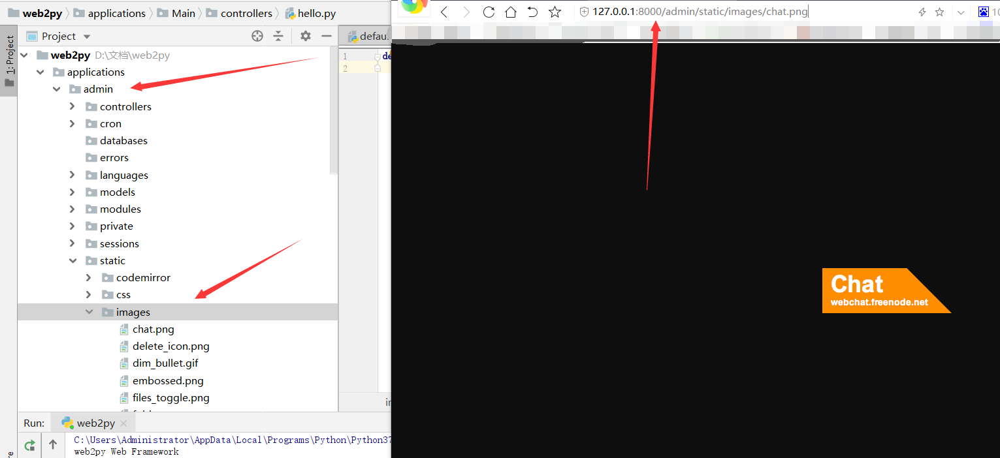
以上便是python基于简单网站的快速创建方法。
如果有什么不足之处，欢迎大家指出！